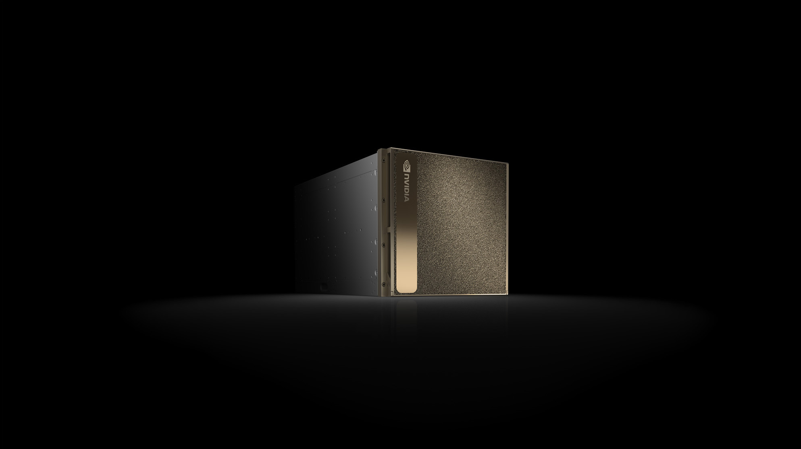
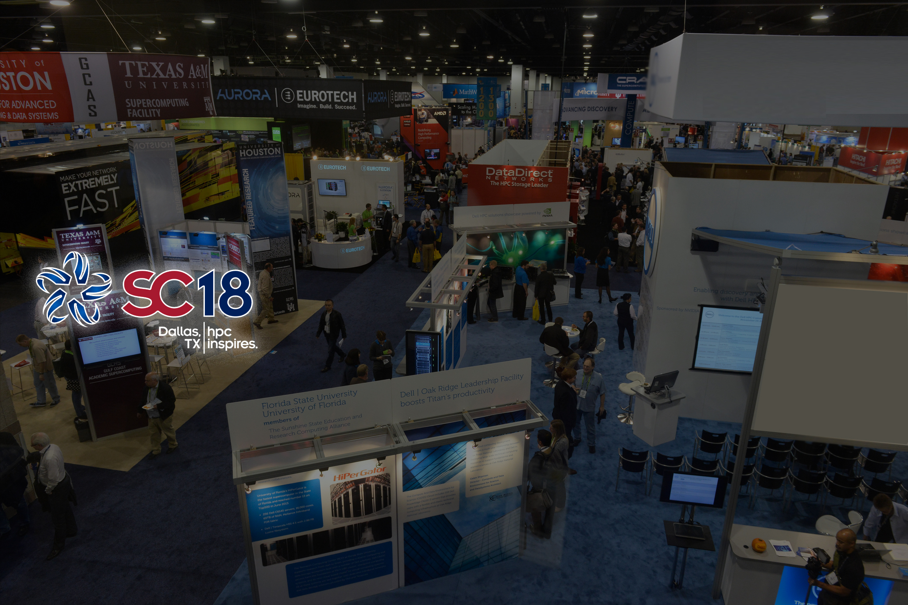

PSC Artificial Intelligence
& Big Data
Converging AI and high performance computing capabilities, empowering research to grow beyond prevailing constraints.
Learn more

DGX-2 Has Arrived!
Available for the first time for open research, the world's most powerful DEEP LEARNING SYSTEM for the most complex AI challenges.

See DGX Station in Action
Stop by Booth #2028 at SC18 in Dallas!
PSC's AI & Big Data leaders will demo its newly available resource.
Success Stories: "Superhuman" Poker AI in Science
Tuomas Sandholm's award-winning Libratus AI used Bridges to achieve superhuman performance by beating four of the world's best human players at Heads-Up, No-Limit, Texas Hold'em poker.
Learn More